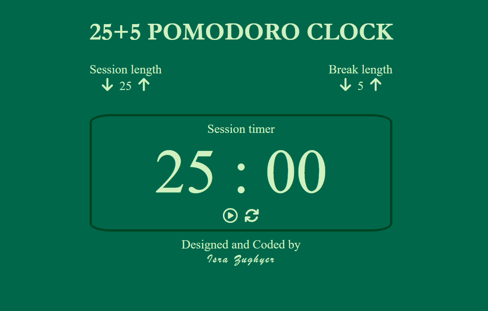
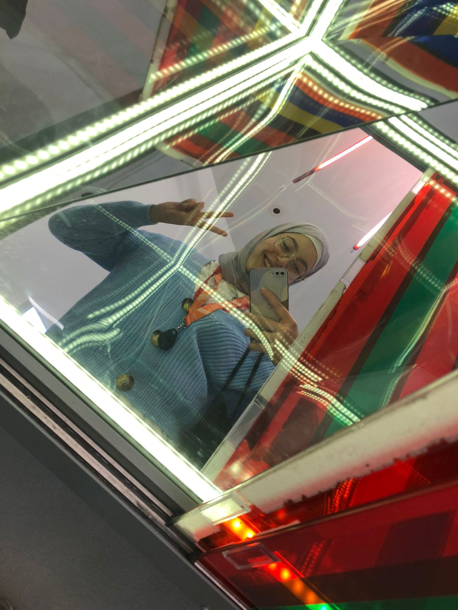

A paragraph
✨ IsraCoder ✨
About
Projects
Blog
Isra Zughyer
Web Developer
Programmer
Your Next
Choice

What is IsraCoder?
What is this?
My personal portfolio page
What does the name mean?
Anything
code
& Anything
me
Who am I ?
Find out more
about me !
Have a Look
Want to see
more project details
?
Contact Section